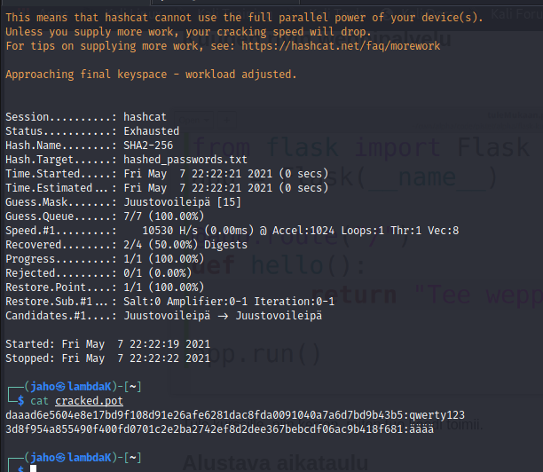
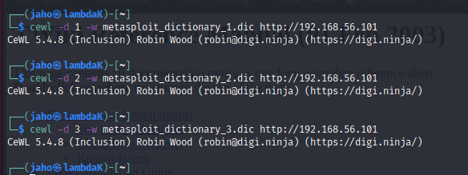
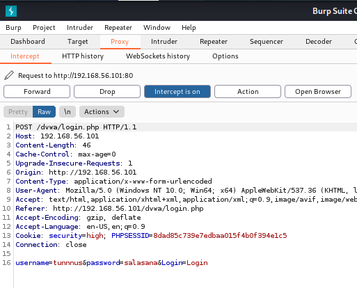
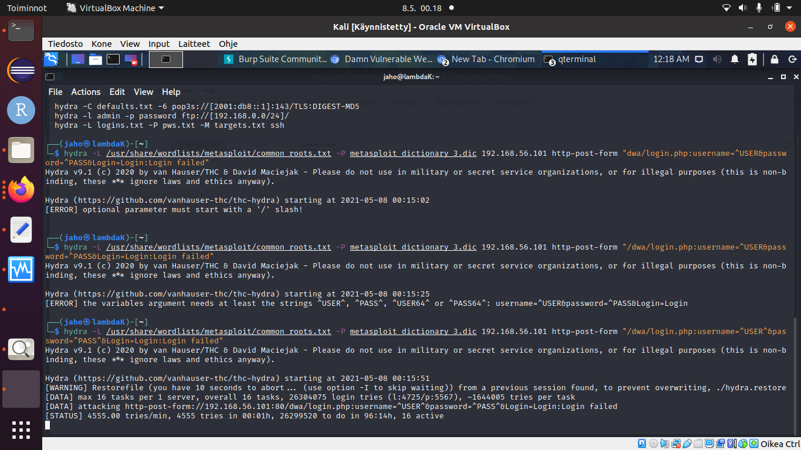
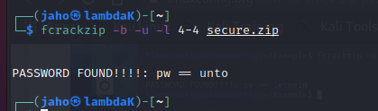
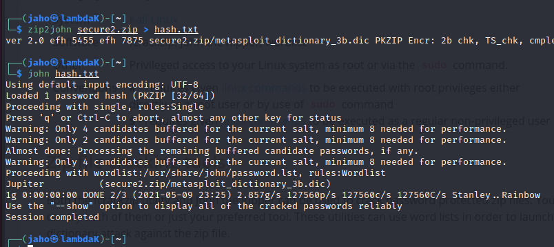

Tunkeutumistestaus -kurssin raportti, osa 6
Tämä on tehtäväraportti Haaga-Helian Tunkeutumistestaus -kurssilta, missä tarkastelemme erilaisten järjestelmien tietoturvallisuutta ja tarkastellaan miten hakkerit näkevät järjestelmän pyrkiessään tunkeutumaan niihin.
Raportin tekijä: Jyrki Aho
Lähteet
Hakkerointi käyttäjän tunnisteiden avulla (Hacking User Credentials)
Santosin ja kumppaneiden mukaan, authentikoinnin murtaminen on eräs yleisimpiä tapoja päästä tunkeutumaan järjestelmiin. Alla on esitetty omat lyhyet muistiinpanoni heidän opetusvideoon liittyen.
Uhat
- Heikot salasanat
- Saman salasanan käyttäminen eri palveluissa
- erikoistapauksissa sama salasana kaikissa palveluissa
- Suojaamaton nettiyhteys kahvilassa (joku voi kaapata salasanan)
- verkon kaappaminen piilotetun laitteen avulla
- Brute force hyökkäys suoraan webbisivuille (Medusa, THC-Hydra, Brutus, Metasploit)
- Dirbuster löytää piilotettuja tiedostoja ja hakemistoja webbisivuilta
- admin salasana on kultaa hakkereilla, koska mahdollistaa pääsyn kaikkialle
- Heikot algoritmit (MD5, SHA1, SHA2)
- kasvavat laskentatehot, näytönohjaimet ja sateenkaarihyökkäykset
Suojautuminen
- kaksivaiheinen tunnistautuminen
- oletussalasanojen muuttaminen
- Käytä vahvoja salasanoja
- Salasanojen suojaus hashing -funktioiden ja suolauksen avulla.
- hash on yksisuuntainen funktio, josta ei voida johtaa alkuperäistä salasanaa
- pelkkä hash -funktion käyttö ei suojaa salasanaa
- suolaus takaa sen, että salasanan murtaminen brute forcella vaikeutuu hieman ja jokaisella kerralla tuotetaan erilainen hash -arvo.
- käytä serifikoitniin pohjautuvia tunnistaumispalveluja
- käytä parempia satunnaisalgoritmeja
Lähteet
Santos et al, 2017. Security Penetration Testing - The Art of Hacking Series LiveLessons: Lesson 6: Hacking User Credentials. Katsottavissa: https://learning.oreilly.com/videos/security-penetration-testing/9780134833989/9780134833989-sptt_00_06_00_00. Katsottu 6.5.2021.
Hashattujen salasanojen murtaminen
Koska MD5 oli niin helppoa ja nopeaa murtaa,niin ajattelin testata murtaa SHA256 salasanoja. Ensimmäiseksi salasanaksi valitsin qwerty123, koska oletan sen olevan erittäin helpon salasanan. Toiskesi salasanaksi valitsin yellow17, koska se sijaitsee hyvin keskellä rockyou.txt -tiedostoa. Kolmanneksi ja neljänneksi salasanoiksi valitsin kokeilumielessä seuraavat ääää ja Th1s5asswOr7. En tiedä toimivatko ääkköset salasanan purkuohjelmissa ja oletan ettei viimeisintä salasanaa ole listalla. Taistelin hieman hashcatin toiminnallisuuden vuoksi yrittäen saada sen ratkaisemaan näitä salauksia. Yritin aluksi salata salasanat käyttämällä sha256sum -ohjelmaa salaamiseen, mutta hashcat herjasi tätä salausta jostakin syystä. Lopulta päätin käyttää salauksessa Online Toolsin SHA256 salausta, jonka hashcat hyväksyi. Minulla oli silti hieman ongelmia hashcatin parametrien vuoksi, minkä vuoksi katselin Santosin ja kumppaneiden videon ja sain lopulta hashcatin toimimaan, kun lisäsin parametrin -O:n, joka ratkoo salauksia ilman näytönohjaimen käyttöä. Tämän parametrin lisäys aiheutti sen, että Hashcat ryhtyi ratkomaan samalla tavalla salasanoja, kuin videolla näytettiin. Totesin rockyou salasanojen purkamisen olevan äärimmäisenhidas prosessi virturaalikoneella, jossa ei ole näytönohjainta käytössä. Tästä johtuen tein käsin paljon lyhyemmän tiedoston ja kokeilin sanakirja hyökkäystä sen avulla. Komennolla hashcat -O -m 1400 hashed_passwords-txt -a 3 dict.txt --potfile-path cracked.pot, niin salasanojen murtaminen onnistui leikiten. Tosin oikeassa elämässä tämä algoritmi saisi pyöriä hyvinkin pitkään, ellei sitä saada suoritettua tehokkaammalla koneella.
Lähteet
Online Tools, 2021. SHA256. Luettavissa: https://emn178.github.io/online-tools/sha256.html. Luettu: 6.5.2021.
Santos et al, 2017. Security Penetration Testing - The Art of Hacking Series LiveLessons: Lesson 6: Hacking User Credentials. Katsottavissa: https://learning.oreilly.com/videos/security-penetration-testing/9780134833989/9780134833989-sptt_00_06_00_00. Katsottu 6.5.2021.
Salasanalistan teko ja hyökkäys
Muistelin että edellisen tunnin aikana eräs henkilö oli tehnyt oman salasanalistan jonkin ohjelman avulla, mutta en muistanut ohjelman nimeä. Tämän vuoksi etsin internetistä oikeaa ohjelmaa tähän ja löysin sellaisen ohjelman kuin CeWL, joka vaikutti samanlaiselta mitä tunnilla oltiin esitelty. Koska muistelin että tämä ohjelma saattaa karata nettiin keräämään tietoja, niin katkaisin koneestani tilapäisesit yhteyden, ennen kuin laitoin ohjelman tutkimaan metasploitin sivua. Suoritin komennon cewl -d [syvyys] -w metasploit_dictionary_[syvyys].dic http://192.168.56.101 kolmella eri syvyysarvolla. Kun asetin syvyyden suuruudeksi yksi, niin ohjelma löysi 365 sanaa. Syvyyys kaksi tuotti 5159 ja syvyys kolme tuotti 5567 sanaa. Koska sanoja tuotettiin näin vähän syvyyksien lisääntyessä, niin ohjelma seuraa tuottamiansa sanoja ja pyrkii välttämään duplikaattisanojen lisäämistä listaan.
Sanakirjahyökkäyksiä voidaan käyttää apuna murtautuessa tietojärjestelmiin. Usein henkilöt valitsevat hellpoja salasanoja, kuten esimerkiksi Toukokuu21 ja tätä tietoa voidaan käyttää hyödyksi. Suurin ongelma tässä hyökkäyksessä on kuitenkin se, ketkä tahot käyttävät näin helppoja salasanoja? Löysin netistä null byten artikkelin hyökkäystavasta, jossa käytetään apuna Burp Suitea ja Hydraa. Artikkelissa selitettiin hyvin,miten Burpin avulla kaapataan tunnistautumisviesti.
Tämän perusteellahyökkääjä tietää minkä muotoista dataa järjestelmä käyttää tunnistautumisessa. Tämän perusteella muotoillaan hydran hyökkäyskäsku oikean muotoiseksi, minkä jälkeen suoritetaaan hyökkäys. Itse valitsin yleisimmät rootin tunnukset ja itse tehdyn kirjaston hykkäyksen pohjana. Syitä tähän valintaan oli kaksi. Ensimmäinen oli se, että saisin pidettyä hyökkäyksen lyhyenä kun ei ole käytössä laajoja kirjastoja ja toinen syy on metasploitin rootin oletussalasana. Oletan että sivustolla mahdollisesti esiintyi kyseinen tunnus ja sitä kautta mahdollisesti voisin murtautua sisälle. Toisaalta joudun kyllä keskeyttämään jossakin kohtaa tämän hyökkäyksen, koska sen oletuskesto on noin 95 tuntia. Peruutin hyökkäyksen ja koitin hyökkäystä vileäkin pienemmällä itse tehdyllä kirjastolla, missä oli vain himan yli 300 sanaa. Oli hieman yllättävää, että tämänkin hyökkäyksen kesto tulisi olemaan 6 tuntia.
Lähteet
Null Byte, 2020. Use Wordlister to Create Custom Password Combinations for Cracking. Luettavissa: https://null-byte.wonderhowto.com/how-to/use-wordlister-create-custom-password-combinations-for-cracking-0206006/. Luettu: 6.5.2021.
Null Byte, 2016. How to Crack Online Web Form Passwords with THC-Hydra & Burp Suite. https://null-byte.wonderhowto.com/how-to/hack-like-pro-crack-online-web-form-passwords-with-thc-hydra-burp-suite-0160643/. Luettu: 6.5.2021.
Tiedoston salasanan purku
Salasin Kalissa zip-tiedoston komennolla zip -9 -e secure.zip metsploit_dictionary_3.dic. Valitsin parametreiksi juuri -9 ja -e, koska halusin että tiedosto olisi mahdollisimman tehokkaasti paketoitu ja se olisi kaiken lisäksi kryptattu. Tällöin salauksen purun ei pitäisi olla helppoa ilman tehokkaita apuvälineitä. Tein tällä paketilla kaksi salaustiedostoa, joista toisen salasana oli unto ja toisen Jupiter. Latasin Kaliin fcrackzip, jonka avulla ajattelin murtaa kyseisen salatun tiedoston. Kokeilin ensimmäisellä kerralla murtamista komennolla fcrackzip -b -l 4-4 secure.zip. Totesin tämän käyvän kaikki mahdolliset kompinaatiot läpi, mutta ohjelma ei silti onnistunut murtamaan ensimmäisen tiedoston salausta. Kokeilin vielä pari kertaa murtamista kunnes totesin kellon olevan paljon ja menin nukkumaan. Toisella kertaa luin tarkasti fcrackzipin help osion läpi ja hoksasin, että en ollut käyttänyt -u parametria murtoyrityksessä. Koska ohjelma ei automaatisesti yritä murtaa tiedostoa, niin kyseinen ohjelma ei voinut tietää oliko se löytänyt oikean salasanan. Kokeilin toisella kertaa ajaa komennon fcrackzip -b -u -l 4-4 secure.zip ja tällä kertaa onnistuin murtamaan tiedoston salauksen.
Tämän jälkeen lähdin murtamaan tätä haasteellisempaa salasanaa. Ensimmäinen murtui helposti koska salasana kombinaatioita ei ole paljon neljän merkin mittaisille salasanoille. Koska tiedän fcrackzip lähtee hyökkäämään tiedostoa kohti kuuden merkin mittaisilla salasanoilla, niin tiedän sillä kestävän jonkin aikaa, ennen kuin se löytää kyseisen salasanan. Tällä välin kokeilin zip2john työkalua, jonka help osio vaikutti mielenkiintoiselta salasanan purkausohjelmistoksi. Brownin ohjeita seuraamalla havaitsin, että kyseinen ohjelma poimiikin zip-tiedostosta olennaisen tiedon, jonka john -niminn ohjelma pyrkii murtamaan. Kokeilin suorittaa esitettyä komentosarjaa ja john pystyi purkamaan zip-tiedoston salauksen hetkessä, kun taas fcrackzip jatkaa edelleen murtoyrityksiänsä.
Olisin tässä voinut näyttää miten esimerkiksi murtaudutaan windowsin suojattuihin MS Office -tiedostoihin, mutta niiden suojaus ei ollut kovinkaan kummoinen ainakaan pari vuotta sitten. Silloin riitti, että Office tiedostosta etsi oikean kohdan ja poisti tietyn pituisen merkkijonon, niin tiedoston suojaus oltiin onnistuttu purkamaan. En usko että suojausta on parannettu sen jälkeen, koska pääosin salasanoilla ei pyritä suojaamaan itse tiedostoa, vaan tiedostoa pyritään suojaamaan mahdollisilta muutoksilta. Toisaalta hakkerin ei ehkä ole syytä muuttaa näiden tiedostojen sisältöä, ellei hakkerin tarkoituksena ole tavoitella tiettyä etua, minkä tiedostossa tehty muutos voisi auttaa. Havaitsin myös googlettamalla, että myös sellainen ohjelma löytyy Kalille kuin office2john, mitä voi myös käyttää apuna hyökättäessä Officen tiedostojen kimppuun. Ensimmäisessä tavassa salasanaa ei enää kyselty, kun se oltiin poistettu, niin tämä jälkimmäinen tapa jättää salasanan paikalleen, jolloin toinen osapuoli ei voi tietää että kyseinen salasana ollaan onnistuttu murtamaan. Ajanpuutteen vuoksi en ehdi tekemään HelSec Twitchistä bulletteja tähän tehtävään, mutta ajattelin kuitenkin käydä hieman kuuntelemassa heidän esityksiänsä heti huomenaamulla. Raportti on nyt mielestäni saatu koottua kasaan, mutta fcrackzip ei ole edelleenkään onnistunut murtamaan Jupiter -salasanaa.
Lähteet
Brown, K. 2021. How to crack zip password on Kali Linux. Linux Config.org. Luettavissa: https://linuxconfig.org/how-to-crack-zip-password-on-kali-linux. Luettu: 9.5.2021.